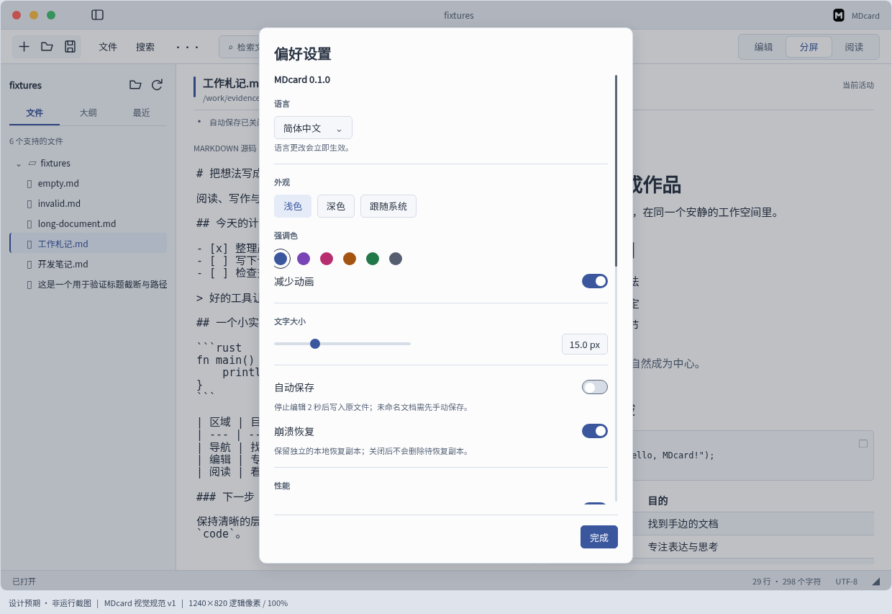
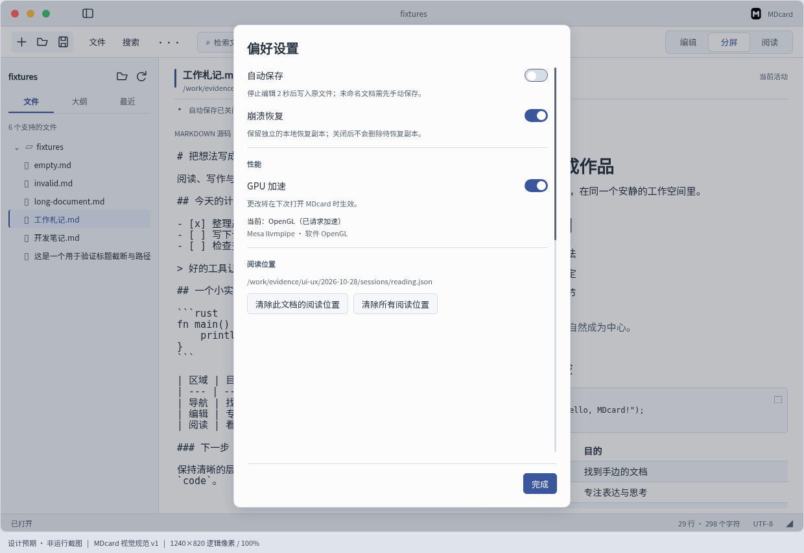
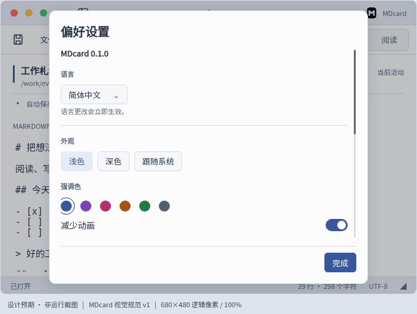
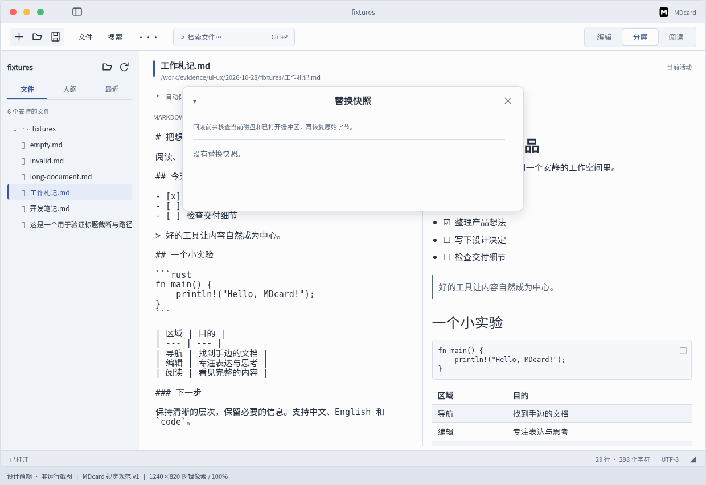

主对比为同源Linux原生应用，专属Xvfb :141、100%、1240×820；窄窗680×480。设计图增加32px标注栏，不属于应用。点击图片查看原尺寸。所有链接相对本文件，可在Windows本地打开。
设置下半区和窄窗对比保留真实滚动位置；窄窗设计展示写作场景，原始与最终窄窗主图展示阅读场景，结构适配规则相同。Windows 150%真实截图及受控X11 125/150%缩放单列，不混为同一平台证据。












首次原生主窗即位于左屏，创建前设置position/active=false，启动前后前台ID一致。这里只作被动原生视觉核对，交互在专属Xvfb完成。